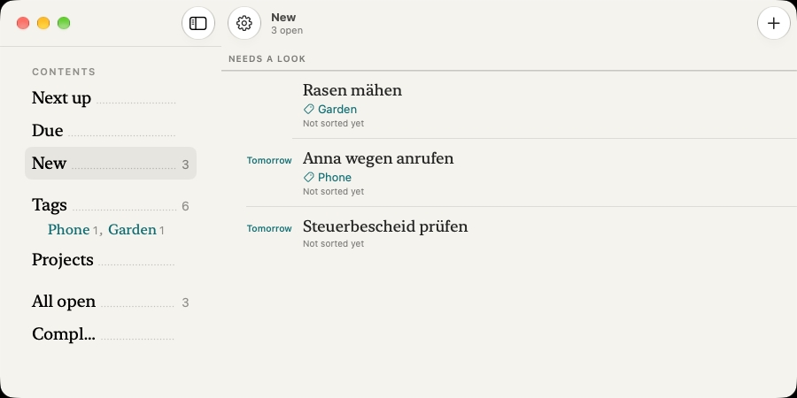
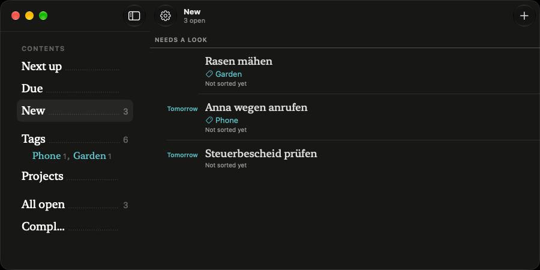
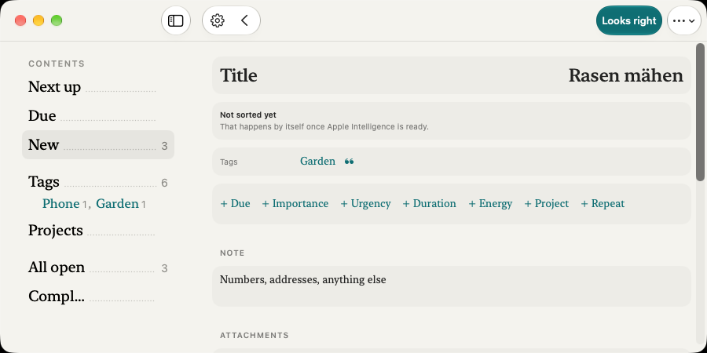
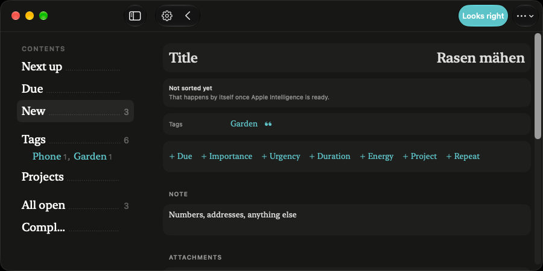

<title>Mac Liste und Detail</title>
<style>
/* Layout: a working sheet. Each screen is one band: today's CI picture, then the draft, then the alternative; light and dark side by side. */
:root{
  --page:#ECEBE5; --sheet:#F4F3EE; --ink:#1B1C1A; --grey:#6F706B; --faint:#A3A49E; --hair:#DAD9D2;
  --acc:#0F6E73; --accbg:rgba(15,110,115,.12); --hover:rgba(27,28,26,.07); --red:#D4402F;
  --serif:"New York","Iowan Old Style",Palatino,Georgia,serif;
  --sans:-apple-system,"SF Pro Text",system-ui,sans-serif;
}
@media (prefers-color-scheme: dark){:root:not([data-theme="light"]){--page:#0F100E;--sheet:#171816;--ink:#EFEEE8;--grey:#9A9B95;--faint:#5E5F5A;--hair:#2D2E2B;--acc:#5FC4C9;--accbg:rgba(95,196,201,.16);--hover:rgba(239,238,232,.09);--red:#FF6B5B;color-scheme:dark}}
:root[data-theme="dark"]{--page:#0F100E;--sheet:#171816;--ink:#EFEEE8;--grey:#9A9B95;--faint:#5E5F5A;--hair:#2D2E2B;--acc:#5FC4C9;--accbg:rgba(95,196,201,.16);--hover:rgba(239,238,232,.09);--red:#FF6B5B;color-scheme:dark}
body{background:var(--page);color:var(--ink);font:15px/1.5 var(--sans);padding:32px 20px 64px}
main{max-width:1240px;margin:0 auto;display:flex;flex-direction:column;gap:56px}
header h1{font:500 34px/1.15 var(--serif);margin:0;letter-spacing:-.3px;text-wrap:balance}
header p{margin:10px 0 0;color:var(--grey);max-width:68ch}
.cap{font-size:11px;font-weight:600;letter-spacing:.12em;text-transform:uppercase;color:var(--grey)}
section>h2{font:500 24px/1.2 var(--serif);margin:6px 0 4px}
section>p{margin:0 0 18px;color:var(--grey);max-width:72ch}
.variant{display:flex;flex-direction:column;gap:10px;margin-top:28px}
.variant h3{margin:0;font-size:15px;font-weight:600}
.variant h3 span{font-weight:400;color:var(--grey)}
.variant .why{margin:0;color:var(--grey);font-size:14px;max-width:80ch}
.pair{display:grid;grid-template-columns:repeat(auto-fit,minmax(min(100%,520px),1fr));gap:16px}
.pair img{display:block;width:100%;border-radius:10px;border:1px solid var(--hair)}
.scroll{overflow-x:auto}
.tag{display:inline-block;font-size:11px;font-weight:600;letter-spacing:.08em;text-transform:uppercase;padding:2px 8px;border-radius:10px;border:1px solid var(--hair);color:var(--grey);margin-left:6px}
.tag.rec{color:var(--acc);border-color:var(--acc)}
ul.notes{margin:4px 0 0;padding-left:18px;color:var(--grey);font-size:14px;max-width:80ch}

/* The app window, in the app's own tokens (mac.css of #408). .w.dark switches them. */
.w{--p:#F4F3EE;--i:#1B1C1A;--g:#6F706B;--f:#A3A49E;--h:#DAD9D2;--a:#0F6E73;--ab:rgba(15,110,115,.12);--ho:rgba(27,28,26,.07);--r:#D4402F;--fi:#FFFFFF;--rv:rgba(15,110,115,.08);
  width:560px;height:400px;background:var(--p);color:var(--i);font:13px/1.35 var(--sans);border-radius:10px;border:1px solid var(--h);display:flex;overflow:hidden;-webkit-font-smoothing:antialiased}
.w.dark{--p:#171816;--i:#EFEEE8;--g:#9A9B95;--f:#5E5F5A;--h:#2D2E2B;--a:#5FC4C9;--ab:rgba(95,196,201,.16);--ho:rgba(239,238,232,.09);--r:#FF6B5B;--fi:#1F201E;--rv:rgba(95,196,201,.10)}
.sd{width:130px;flex:none;border-right:1px solid var(--h);padding:40px 8px 8px;position:relative}
.sd .tl{position:absolute;left:12px;top:13px;display:flex;gap:6px}.sd .tl i{width:9px;height:9px;border-radius:50%;background:var(--h)}
.ix{display:flex;align-items:baseline;gap:4px;padding:3px 6px;border-radius:6px;font:13px/1.3 var(--serif)}
.ix i{flex:1;border-bottom:1.2px dotted var(--f);transform:translateY(-3px)}
.ix b{font:400 10px var(--sans);color:var(--g)}
.ix.on{background:var(--ho)}
.mn{flex:1;min-width:0;display:flex;flex-direction:column}
.bar{height:44px;flex:none;display:flex;align-items:center;gap:8px;padding:0 12px}
.bar .t{font-size:13px;font-weight:600}
.bar .s{font-size:11px;color:var(--g)}
.bar .fill{flex:1}
.rb{width:26px;height:26px;border-radius:50%;border:1px solid var(--h);background:var(--fi);display:flex;align-items:center;justify-content:center;color:var(--i)}
.rb.bare{border-color:transparent;background:transparent}
.pill{height:26px;padding:0 11px;border-radius:13px;background:var(--a);color:var(--p);font-size:12px;font-weight:600;display:flex;align-items:center}
svg.ic{width:13px;height:13px;fill:none;stroke:currentColor;stroke-width:1.7;stroke-linecap:round;stroke-linejoin:round;flex:none}
.ls{padding:0 28px;overflow:hidden}
.ls .cp{margin:4px 0 2px;font-size:9px;font-weight:600;letter-spacing:.12em;text-transform:uppercase;color:var(--g)}
.rw{display:grid;grid-template-columns:52px 1fr;column-gap:10px;padding:8px 0;border-bottom:1px solid var(--h)}
.rw .mg{text-align:right;font-size:10px;font-weight:500;color:var(--g);padding-top:3px;font-variant-numeric:tabular-nums}
.rw .mg.red{color:var(--r)}
.rw .tt{font:15px/1.22 var(--serif)}
.rw .mt{display:flex;gap:10px;margin-top:3px;font-size:11px;color:var(--g);align-items:center}
.rw .mt span{display:inline-flex;gap:4px;align-items:center}
.rw.sel{background:var(--ab);margin:0 -8px;padding-left:8px;padding-right:8px;border-radius:8px;border-bottom-color:transparent}
.rw.hov{background:var(--ho);margin:0 -8px;padding-left:8px;padding-right:8px;border-radius:8px;border-bottom-color:transparent}
.rw.one{grid-template-columns:52px 1fr auto;align-items:baseline;padding:6px 0}
.rw.one .tt{font-size:14px}.rw.one .mt{margin:0}
.hint{font-size:9px;color:var(--f);text-align:right;margin-top:-2px}
.dt{padding:2px 28px 0;overflow:hidden;max-width:420px}
.dt .hd{display:flex;align-items:center;gap:6px;font-size:9px;font-weight:600;letter-spacing:.12em;text-transform:uppercase;color:var(--g)}
.dt h4{margin:4px 0 0;font:500 22px/1.15 var(--serif);letter-spacing:-.2px}
.dt .raw{margin-top:5px;font-size:10px;color:var(--g)}
.dt .raw.q{font:italic 11px/1.4 var(--serif)}
.dt .raw.q b{font:600 8px var(--sans);letter-spacing:.1em;font-style:normal;margin-right:4px}
.rvn{margin-top:10px;padding:7px 10px;border-radius:8px;background:var(--rv);font-size:10.5px}
.rvn b{display:block;font-size:11px}
.rvn span{color:var(--g)}
.fr{display:grid;grid-template-columns:86px 1fr;align-items:center;min-height:28px;border-bottom:1px solid var(--h);font-size:12px}
.fr .l{color:var(--g);font-size:9px;font-weight:600;letter-spacing:.1em;text-transform:uppercase}
.fr .v{display:flex;gap:6px;align-items:center}
.fr .v i{font-style:normal;font-size:9px;color:var(--g)}
.fr.reg{grid-template-columns:70px 1fr;min-height:30px}
.fr.reg .l{font-size:10.5px;font-weight:400;letter-spacing:0;text-transform:none}
.fr.reg .v{font:14px var(--serif)}
.fr.reg .v.acc{color:var(--a)}
.chips{display:flex;flex-wrap:wrap;gap:5px;margin-top:9px}
.chip{display:inline-flex;align-items:center;gap:4px;height:20px;padding:0 8px;border-radius:10px;border:1px solid var(--h);font-size:10px;color:var(--a)}
.chip.ink{color:var(--i)}
.words{display:flex;flex-wrap:wrap;gap:4px 12px;margin-top:10px;font:13.5px var(--serif);color:var(--a)}
.sec{margin-top:12px;font-size:9px;font-weight:600;letter-spacing:.12em;text-transform:uppercase;color:var(--g)}
.note{margin-top:3px;font:13px var(--serif);color:var(--f)}
.att{display:flex;gap:14px;margin-top:4px;font-size:11.5px;color:var(--a)}
.att span{display:inline-flex;gap:4px;align-items:center}
.card{background:var(--ho);border-radius:8px;padding:6px 10px;margin-top:8px}
</style>

<main>
<header>
  <div class="cap">#477 · Mac und iPad im breiten Fenster</div>
  <h1>Liste und Detail im Papierstil</h1>
  <p>„Heute“ sind die Bilder aus dem Mac-Fotolauf der CI (Lauf vom 17.10., englische Oberfläche, Fenster 900 × 450). „Entwurf“ folgt den freigegebenen Tafeln vom 16.10., berichtigt um zwei spätere Beschlüsse: kein Erledigen-Haken in der Leiste (#435) und kein Pfeil am Zeilenende (#509). Jedes Fenster steht hell und dunkel nebeneinander.</p>
</header>

<section>
  <div class="cap">Schnitt 1</div>
  <h2>Liste</h2>
  <p>Die Zeilen sind am Mac schon fast die des iPhones. Es fehlen die Maße der Startseite, die Zahl in der Werkzeugleiste, der Rand von 44 pt und die Köpfe in Großbuchstaben. Neu dazu kommen die Auswahl in Akzent und das Grau, wenn der Zeiger über einer Zeile steht.</p>

  <div class="variant">
    <h3>Heute <span>aus der CI</span></h3>
    <div class="pair">
      
      
    </div>
  </div>

  <div class="variant">
    <h3>Entwurf <span>wie die Tafel</span><span class="tag rec">Empfehlung</span></h3>
    <p class="why">Titel 15 pt halbfett, daneben „3 offen · 35 Min.“ in Grau. Zeilen wie auf der iPhone-Startseite: Zeit am Rand, Titel in New York 18 pt, Merkmale mit Symbolen. Die Zeile unter dem Zeiger in Grau 7 %. Die gewählte Zeile in Akzent 12 % kommt mit der Tastaturauswahl (#480), weil eine Zeile erst dann gewählt sein kann, ohne geöffnet zu sein.</p>
    <div class="scroll"><div class="pair" data-dark>
      <div class="w"><div class="sd"><div class="tl"><i></i><i></i><i></i></div><div class="ix"><span>Als nächstes</span><i></i><b>2</b></div><div class="ix"><span>Fällig</span><i></i><b>1</b></div><div class="ix on"><span>Neu</span><i></i><b>3</b></div><div class="ix"><span>Tags</span><i></i><b>6</b></div><div class="ix"><span>Projekte</span><i></i><b></b></div><div class="ix"><span>Alle offenen</span><i></i><b>9</b></div></div>
        <div class="mn"><div class="bar"><span class="t">Neu</span><span class="s">3 offen · 35 Min.</span><span class="fill"></span><span class="rb"><svg class="ic" viewBox="0 0 24 24"><path d="M12 5v14M5 12h14"/></svg></span></div>
        <div class="ls"><div class="cp">Braucht einen Blick</div>
          <div class="rw"><div class="mg"></div><div><div class="tt">Rasen mähen</div><div class="mt"><span><svg class="ic" viewBox="0 0 24 24"><path d="M3.5 12.5V5.5a2 2 0 012-2h7l8 8-9 9z"/></svg>Garten</span></div></div></div>
          <div class="rw sel"><div class="mg">Morgen</div><div><div class="tt">Anna wegen anrufen</div><div class="mt"><span><svg class="ic" viewBox="0 0 24 24"><path d="M3.5 12.5V5.5a2 2 0 012-2h7l8 8-9 9z"/></svg>Telefon</span><span>5 Min.</span></div></div></div>
          <div class="rw hov"><div class="mg red">Heute</div><div><div class="tt">Steuerbescheid prüfen</div><div class="mt"><span>30 Min.</span></div></div></div>
          <div class="hint">gewählt (mit #480): Akzent · unter dem Zeiger: Grau</div>
        </div></div></div>
    </div></div>
  </div>

  <div class="variant">
    <h3>Alternative <span>einzeilig, dichter</span></h3>
    <p class="why">Am Mac sind lange Listen häufiger als am iPhone. Hier steht jede Aufgabe auf einer Zeile, die Merkmale rechts. Im 450 pt hohen Fenster passen so etwa doppelt so viele Zeilen. Dafür ist es nicht mehr dieselbe Zeile wie auf dem iPhone (ADR-1), und lange Titel werden gekürzt.</p>
    <div class="scroll"><div class="pair" data-dark>
      <div class="w"><div class="sd"><div class="tl"><i></i><i></i><i></i></div><div class="ix"><span>Als nächstes</span><i></i><b>2</b></div><div class="ix"><span>Fällig</span><i></i><b>1</b></div><div class="ix on"><span>Neu</span><i></i><b>3</b></div><div class="ix"><span>Tags</span><i></i><b>6</b></div><div class="ix"><span>Projekte</span><i></i><b></b></div><div class="ix"><span>Alle offenen</span><i></i><b>9</b></div></div>
        <div class="mn"><div class="bar"><span class="t">Neu</span><span class="s">3 offen · 35 Min.</span><span class="fill"></span><span class="rb"><svg class="ic" viewBox="0 0 24 24"><path d="M12 5v14M5 12h14"/></svg></span></div>
        <div class="ls"><div class="cp">Braucht einen Blick</div>
          <div class="rw one"><div class="mg"></div><div class="tt">Rasen mähen</div><div class="mt"><span>Garten</span></div></div>
          <div class="rw one sel"><div class="mg">Morgen</div><div class="tt">Anna wegen anrufen</div><div class="mt"><span>Telefon</span><span>5 Min.</span></div></div>
          <div class="rw one hov"><div class="mg red">Heute</div><div class="tt">Steuerbescheid prüfen</div><div class="mt"><span>30 Min.</span></div></div>
          <div class="rw one"><div class="mg">Fr.</div><div class="tt">Reifen wechseln lassen</div><div class="mt"><span>Auto</span><span>1 Std.</span></div></div>
          <div class="rw one"><div class="mg"></div><div class="tt">NAS Pakete aktualisieren</div><div class="mt"><span>Computer</span></div></div>
        </div></div></div>
    </div></div>
  </div>
</section>

<section>
  <div class="cap">Schnitt 2</div>
  <h2>Detail</h2>
  <p>Heute zeigt das Detail am Mac und auf dem iPad graue Karten. Auf dem iPhone ist es seit #438 schon ein Register auf Papier. Alle Funktionen bleiben in beiden Varianten: Ergänzen, Anhänge, Revisionen, Ort, Unteraufgaben und das Feld-Popover an der Zeile.</p>

  <div class="variant">
    <h3>Heute <span>aus der CI</span></h3>
    <div class="pair">
      
      
    </div>
  </div>

  <div class="variant">
    <h3>Entwurf <span>wie die Tafel</span></h3>
    <p class="why">Titel in New York 30 pt, darunter „Gesagt am …“ klein in Grau. Beschriftungen in Großbuchstaben in einer festen Spalte, Haarlinien, leere Felder als umrandete Chips. Die Spalte ist höchstens 760 pt breit. Damit sieht das Detail am Mac und auf dem iPad anders aus als auf dem iPhone.</p>
    <div class="scroll"><div class="pair" data-dark>
      <div class="w"><div class="sd"><div class="tl"><i></i><i></i><i></i></div><div class="ix"><span>Als nächstes</span><i></i><b>2</b></div><div class="ix"><span>Fällig</span><i></i><b>1</b></div><div class="ix on"><span>Neu</span><i></i><b>3</b></div><div class="ix"><span>Tags</span><i></i><b>6</b></div></div>
        <div class="mn"><div class="bar"><span class="rb bare"><svg class="ic" viewBox="0 0 24 24"><path d="M15 5l-7 7 7 7"/></svg></span><span class="s" style="font-size:12px">Neu</span><span class="fill"></span><span class="pill">Passt</span><span class="rb"><svg class="ic" viewBox="0 0 24 24"><circle cx="6" cy="12" r="1"/><circle cx="12" cy="12" r="1"/><circle cx="18" cy="12" r="1"/></svg></span></div>
        <div class="dt"><div class="hd">Morgen</div><h4>Anna wegen anrufen</h4><div class="raw">Gesagt am Freitag, 17. Oktober, 09:12: „Anna wegen anrufen morgen“</div>
          <div class="rvn"><b>Noch nicht sortiert</b><span>Das passiert von selbst, sobald Apple Intelligence bereit ist.</span></div>
          <div class="fr"><span class="l">Fällig</span><span class="v">Morgen <i>aus deinen Worten</i></span></div>
          <div class="fr"><span class="l">Tags</span><span class="v"><span class="chip ink">Telefon</span></span></div>
          <div class="chips"><span class="chip">+ Wichtig</span><span class="chip">+ Dringend</span><span class="chip">+ Dauer</span><span class="chip">+ Energie</span><span class="chip">+ Projekt</span><span class="chip">+ Wiederholen</span></div>
          <div class="sec">Notiz</div><div class="note">Nummern, Adressen, alles andere</div>
          <div class="sec">Anhänge</div><div class="att"><span>Foto</span><span>Datei</span></div>
        </div></div></div>
    </div></div>
  </div>

  <div class="variant">
    <h3>Alternative <span>das Register des iPhones, nur breiter</span><span class="tag rec">Empfehlung</span></h3>
    <p class="why">Das Detail, das du auf dem iPhone schon benutzt, hier auch in 30 pt, aber sonst unverändert: Beschriftungen in normaler Schrift, Werte in New York, leere Felder als Wortleiste ohne Rahmen. Spalte höchstens 760 pt. Ein Detail für alle Geräte (ADR-1). Schmaler im Code und ohne neue Regeln, die nur am Mac gelten.</p>
    <div class="scroll"><div class="pair" data-dark>
      <div class="w"><div class="sd"><div class="tl"><i></i><i></i><i></i></div><div class="ix"><span>Als nächstes</span><i></i><b>2</b></div><div class="ix"><span>Fällig</span><i></i><b>1</b></div><div class="ix on"><span>Neu</span><i></i><b>3</b></div><div class="ix"><span>Tags</span><i></i><b>6</b></div></div>
        <div class="mn"><div class="bar"><span class="rb bare"><svg class="ic" viewBox="0 0 24 24"><path d="M15 5l-7 7 7 7"/></svg></span><span class="s" style="font-size:12px">Neu</span><span class="fill"></span><span class="pill">Passt</span><span class="rb"><svg class="ic" viewBox="0 0 24 24"><circle cx="6" cy="12" r="1"/><circle cx="12" cy="12" r="1"/><circle cx="18" cy="12" r="1"/></svg></span></div>
        <div class="dt"><h4>Anna wegen anrufen</h4><div class="raw q"><b>GESAGT</b>Anna wegen anrufen morgen</div>
          <div class="rvn"><b>Noch nicht sortiert</b><span>Das passiert von selbst, sobald Apple Intelligence bereit ist.</span></div>
          <div class="fr reg"><span class="l">Fällig</span><span class="v">Morgen</span></div>
          <div class="fr reg"><span class="l">Tags</span><span class="v acc">Telefon</span></div>
          <div class="words"><span>+ Wichtig</span><span>+ Dringend</span><span>+ Dauer</span><span>+ Energie</span><span>+ Projekt</span><span>+ Wiederholen</span></div>
          <div class="sec">Notiz</div><div class="note">Nummern, Adressen, alles andere</div>
          <div class="sec">Anhänge</div><div class="att"><span>Foto</span><span>Datei</span></div>
        </div></div></div>
    </div></div>
  </div>
</section>

<section>
  <div class="cap">Was gleich bleibt</div>
  <ul class="notes">
    <li>Das iPhone ändert sich in keinem der beiden Schnitte.</li>
    <li>Das iPad im breiten Fenster bekommt dasselbe wie der Mac (dein Beschluss vom 17.10.).</li>
    <li>Kein Erledigen-Haken in der Leiste. Erledigen steht im Menü „…“ an erster Stelle.</li>
    <li>Der Nachweis entsteht als Bild im Mac-Fotolauf der CI, nie auf deinem Mac. Die Abnahme läuft über TestFlight.</li>
  </ul>
</section>
</main>

<script>
document.querySelectorAll('.pair[data-dark]').forEach(function(p){
  var w=p.querySelector('.w'); if(!w) return;
  var d=w.cloneNode(true); d.classList.add('dark'); p.appendChild(d);
});
</script>
